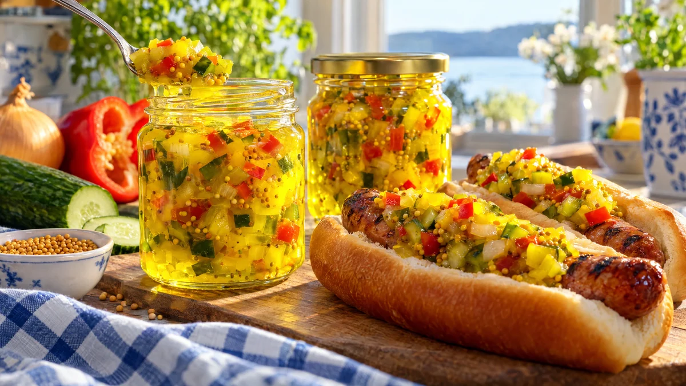

RESTFEST · RECEPTSylt, saft & inlagt
Bostongurka på slokiga gurkor och paprika
Gurkorna som börjat slokna i grönsakslådan, en röd paprika och två lökar. Allt finhackas, saltas och kokas i en söt och syrlig lag med senapsfrön och gurkmeja till en lysande gul, krispig relish. Korvkioskens klassiker, betydligt godare hemmagjord.
- Förberedelse
- 30 min + 4 tim saltning
- Tillagning
- 10 min
- Portioner
- ca 1 liter (4 burkar à 2½ dl)
- Nivå
- Nybörjare
Bra att veta. Diska burkar, flaskor och lock noga och skålla dem med kokande vatten precis före användning, eller värm glaset i ugnen på 125 grader i 10 minuter. Fyll dem medan innehållet är varmt och skruva på locket direkt. Förvara öppnade burkar i kylen och använd alltid en ren sked.
 Det här behöver du
Det här behöver du
Tryck på + vid det du behöver köpa.
Grönsaker
Lag
Gör så här
- Dela gurkorna på längden och skrapa ur kärnorna med en tesked. Finhacka gurkan i små tärningar, ca ½ cm. Finhacka löken och paprikan lika smått.
- Blanda grönsakerna med saltet i en stor skål. Täck och låt stå i kylen i minst 4 timmar, gärna över natten. Saltet drar ut vätskan, så att relishen blir krispig.
- Häll grönsakerna i en sil, skölj snabbt med kallt vatten och krama ur dem ordentligt, gärna i en ren kökshandduk.
- Koka upp socker, ättika, vatten, senapsfrön, gurkmeja och vitpeppar i en stor kastrull.
- Lägg i grönsakerna, låt koka upp och sjud i 2–3 minuter.
- Rör ut majsstärkelsen i det kalla vattnet och rör ner det i kastrullen. Låt sjuda under omrörning i 1 minut, tills lagen har tjocknat och blivit blank.
- Fyll de varma burkarna och skruva på locken direkt.
Dekoration och servering
- Fyll bostongurkan i små glasburkar, så att de gula, gröna och röda bitarna syns genom glaset.
- Servera till grillad korv, köttbullar, hamburgare eller köttfärslimpan i recept 72.
- Den blir godast efter ett par dagar, när smakerna har satt sig.
- Förvara burkarna i kylen, där håller de i ca 3 månader. En öppnad burk håller ca 1 månad.
- Gurkmeja färgar, så skölj kastrull och slev direkt.
Mått och ugnstemperaturer
Måtten är svenska (dl, msk, tsk, krm). Ugnstemperaturerna gäller vanlig ugn med över- och undervärme; med varmluft, sänk med 20 grader.